| [The available evidence allows us to get a pretty good idea how MT enacted the "Evasion" episode on the tour. In the Mark Twain Papers (and used here with permission) are both most of the notebook pages on which he drafted an introduction to the "reading," and most of the page proofs from Huck Finn on which he indicated the changes -- deletions, additions, revisions -- he felt would make the long episode fit for live performance. Where pieces of the evidence are missing, we can fill in the gaps with the printed text. Below, sources are indicated by colors. The blue font indicates the notebook pages. The black font indicates the page proofs MT made revisions on. The brown font indicates the published text of Huck Finn. To get a closer look at the revised page proofs, click on the images along the left.] |
|
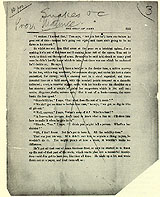 Click to enlarge. |
This is a chapter from an unpublished story of mine called the Adventures of Huckleberry Finn -- the episode is a sort of story in itself -- & I will divide it & make 2 separate readings of it. Jim, a runaway slave from Missouri, -- he is an old friend of Huck Finn & Tom Sawyer, -- is captured, far down the Mississippi, & by chance is imprisoned in an isolated log cabin on a small plantation belonging to Tom's uncle, -- & Tom is there on a visit. When this episode begins, Tom & Huck have been secretly at work, 2 or 3 weeks, to set Jim free. They could get him out & turn him loose any night, without any trouble, for no watch is kept; but Tom has read all the remarkable prison escapes to put in a dozen nights digging a hole under a bottom log in the rear to get him out at. At this work they are protected from sight by a clabboard lean-to which joins the rear of the cabin. Huck says: Well, sir, the BULK of every kind of the work was done at last; & we was all pretty much wore out & used up, specially Jim. So one midnight when we was just bout to creep out through the hole & shove home to bed, Tom he thought of something & says: ["T]here warn't no case of a state prisoner not scrabbling his inscriptions to leave behind, and his coat of arms.["] |
|
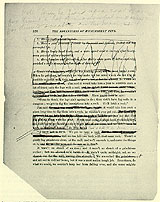 Click to enlarge. |
Well Tom he fixed up a coat of arms for Jim & a lot of mournful inscriptions for him to scratch on the wall, but Jim said it would take him a year to scrabble such a lot of truck onto the logs with a nail. Then Tom says: "Come to think, the logs ain't agoing to do; they don't have log walls in a dungeon; we got to dig the mournful inscriptions into a rock. We'll fetch a rock." Jim said it would take him such a pison long time to dig them into a rock, he wouldn't ever get out. But it had to be done. Tom says: "I know how to fix it. We got to have a rock, and we can kill two birds with that same rock. There's a gaudy big grindstone down at the mill, and we'll smouch it, and carve the things on it." It warn't no slouch of an idea; and it warn't no slouch of a grindstone nuther. It warn't quite midnight yet, so we smouched it and set out to roll her home, but it was a most nation tough job. Sometimes, do what we could, we couldn't keep her from falling over, and she come mighty |
TWO MISSING PAGES |
near mashing us every time. Tom said she was going to get one of us, sure, before we got through. We got her half way; and then we was plumb played out, and most drownded with sweat. We see it warn't no use; we got to go and fetch Jim So he raised up his bed and slid the chain off of the bed-leg, and wrapt it round and round his neck, and we crawled out through our hole and down there, and Jim and me laid into that grindstone and walked her along like nothing; and Tom superintended. He could out-superintend any boy I ever see. He knowed how to do everything. Our hole was pretty big, but it warn't big enough to get the grindstone through; but Jim he took the pick and soon made it big enough. Then Tom marked out them things on it with the nail, and set Jim to work on them, with the nail for a chisel and an iron bolt from the rubbage in the lean-to for a hammer, and told him to work till the rest of his candle quit on him, and then he could go to bed, and hide the grindstone under his straw tick and sleep on it. Then we helped him fix his chain back on the bed-leg, and was ready for bed ourselves. But Tom thought of something, and says: "You got any spiders in here, Jim?" "No, sah, thanks to goodness I hain't, Mars Tom." "All right, we'll get you some." "But bless you, honey, I doan' want none. I's afeard un um. I jis' 's soon have rattlesnakes aroun'." Tom thought a minute or two, and says: "It's a good idea. And I reckon it's been done. It must a been done; it stands to reason. Yes, it's a prime good idea. Where could you keep it?" "Keep what, Mars Tom?" "Why, a rattlesnake." "De goodness gracious alive, Mars Tom! Why, if dey was a rattlesnake to come in heah I'd take en bust right out thoo dat log wall, I would, wid my head." "Why, Jim, you wouldn't be afraid of it after a little. You could tame it." "Tame it!" "Yes -- easy enough. Every animal is grateful for kindness and petting, and they wouldn't think of hurting a person that pets them. Any book will tell you that. You try -- that's all I ask; just try for two or three days. Why, you can get him so in a little while that he'll love you; and sleep with you; and won't stay away from you a minute; and will let you wrap him round your neck and put his head in your mouth." "Please, Mars Tom -- doan' talk so! I can't stan' it! He'd let me shove his head in my mouf -- fer a favor, hain't it? I lay he'd wait a pow'ful long time 'fo' I ast him. En mo' en dat, I doan' want him to sleep wid me." "Jim, don't act so foolish. A prisoner's got to have some kind of a dumb pet, and if a rattlesnake hain't ever been tried, why, there's more glory to be gained in your being the first to ever try it than any other way you could ever think of to save your life." |
|
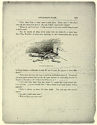 Click to enlarge. |
"Why, Mars Tom, I doan' want no sich glory. Snake take 'n bite Jim's chin off, den whah is de glory? No, sah, I doan' want no sich doin's." "Blame it, can't you try? I only want you to try -- you needn't keep it up if it don't work." "But de trouble all done if de snake bite me while I's a tryin' him. Mars Tom, I's willin' to tackle mos' anything 'at ain't onreasonable, but ef you en Huck fetches a rattlesnake in heah for me to tame, jes as shore as you's bawn I's gwyne to leave, ain't gwine to stay in no sich place." "Well, then, let it go, let it go, if you're so bullheaded about it. We can get you some garter-snakes and you can tie some buttons on their tails, and let on they're rattlesnakes, and I reckon that'll have to do." "I k'n stan' dem, Mars Tom, -- kin stan' 'em -- but blame 'f I couldn' worry along widout um, I tell you dat. I never knowed b'fo, 't was so much bother and trouble to be a prisoner." [MT's stage direction in margin here: "(pathetic) (almost tearful)."] Well, it always is, when it's done right. You got any rats around here?" "No, sah, I hain't seed none." "Well, we'll get you some rats." |
|
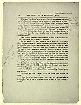 Click to enlarge. 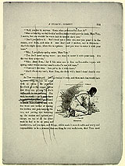 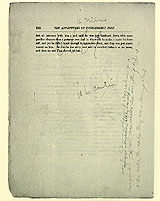 |
"Why, Mars Tom, I doan' want no rats. Dey's de troublesomest creturs to sturb a body, en rustle roun' over 'im, en bite his feet, when he's tryin' to sleep, I ever see [MT's alternate version in margin here: "bout gallopin & scramblin & carryin on, over a pusson when he's tryin' to res -- in de worl!"]. No, sah, gimme g'yarter-snakes, 'f I's got to have 'm, but doan' gimme no rats, I ain' got no use f'r um, skasely." "But Jim, you got to have 'em -- they all do. Prisoners ain't ever without rats. There ain't no instance of it. And they train them, and pet them, and learn them tricks, and they get to be as sociable as flies. But you got to play music to them. You got anything to play music on?" "I ain' got nuffin but a coase comb en a piece o' paper, en a juice-harp; but I reck'n dey wouldn' take no stock in a juice-harp." "Yes they would. They don't care what kind of music 'tis. A jew-sharp's plenty good enough for a rat. All animals likes music -- in prison they dote on it. Specially, painful music; and you can't get no other kind out of a jews-harp. It always interests them; and they come out to see what's the matter with you. Yes, you're all right. You want to set on your bed, nights, before you go to sleep, and early in the mornings, and play your jews-harp; play The Last Link is Broken -- that's the thing that'll scoop a rat, quicker'n anything else; and when you've played about two minutes, you'll see all the rats, and the snakes, and spiders, and things begin to feel worried about you, and then they'll come a piling out. And they'll just fairly swarm over you, and have a noble good time." "Yes, dey will, I reck'n, Mars Tom, but what kine er time is Jim havin'? Bless if I kin see de pint. But I'll do it ef I got to. I reck'n I better keep de animals satisfied, en not have no trouble in de house." [MT cancelled all of pages 331 & 332, but at the end of 332 he wrote "To be contin" -- suggesting that it was here that he broke the episode into two parts, which was the way he originally performed it.] |
|
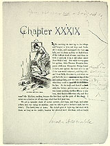 Click to enlarge. |
In the morning we went up to the village and bought a wire rat trap and fetched it down, and unstopped the best hole, and in about an hour we had fifteen of the bulliest kind of ones; and then we took it and put it in a safe place under Aunt Sally's bed. But while we was gone for spiders, little Thomas Franklin Benjamin Jefferson Elexander Phelps found it there, and opened the door of it to see if the rats would come out, and they did; and Aunt Sally come in, and when we got back she was a skippin' & a scallopin' around on the bed tryin' to turn herself inside out. You never see a body act so, and the rats was doing what they could to make it sociable for her. So she took and dusted us with the hickry, and we was as much as two hours catching another fifteen or sixteen, drat that meddlesome cub, and they warn't the likeliest, nuther, because the first haul was the pick of the communion. I never see a likelier lot of rats than what that first haul was. We got a splendid stock of sorted spiders, and bugs, and frogs, and caterpillars, and one thing or another; and we like-to got a hornet's nest, but we didn't. The family was at home. We didn't give it right up, but staid with them as long as we could; because we allowed we'd tire them out or they'd |
|
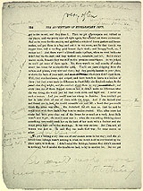 Click to enlarge. |
got to tire us out, and they done it. Then we got allycumpain and rubbed on the places, and was pretty near all right again, but couldn't set down convenient -- that warn't no matter, didn't have time to set down. And so we went for the snakes, and grabbed a couple dozen garters and house-snakes, and put them in a bag, and put it in our room, and by that time it was supper time, and a rattling good honest day's work; and hungry? -- oh, no, I reckon not! And there warn't a blessed snake up there, when we went back -- we didn't half tie the sack, and they worked out somehow, and left. But it didn't matter much, because they was still on the premises somewheres. So we judged we could get some of them again. No, there warn't no scarcity of snakes about the house for a considerable spell. You'd see them dripping from the rafters and places, every now and then; and when you warn't expectin 'em they'd come down ker-whop in your plate, or down the back of your neck, and very often where you didn't want them. Well, they was handsome, and striped, and there warn't no harm in a million of them; but that never made no difference to Aunt Sally, she despised snakes, be the denomination what they might, and somehow she, well she couldn't stand them no way; and every time one of them flopped down on her, it didn't make no difference what she was doing, she would just lay that work down and light out. I never see such a woman. And you could hear her whoop to Jericho. You couldn't get her to take aholt of one of them with the tongs. And if she turned over in the night and found one in bed, the way she would scramble out o' that and lift a howl that you would think the house was afire. She could make more fuss over a little thing. She disturbed the old man so, that he said he could most wish there hadn't ever been no snakes created. Why, after every last snake had been gone clear out of the house for as much as a week, Aunt Sally warn't over it yet; she warn't near over it; when she was sitting thinking about something, you could just take a frog or something cold & touch her on the back of the neck with a feather and she would jump right out of her stockings. It was very curious. But Tom said all women was just so. He said they was made that way; for some reason or other. If you b'lieve me, we got a licking every time one of
our snakes come in her way; and she allowed these
lickings warn't nothing to what she would do if we ever
loaded up the place again with them. I didn't mind the
lickings, because they didn't amount to nothing; but I
minded the trouble we had, to lay in another lot. But we
got |
|
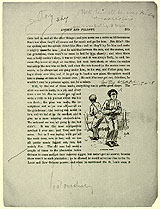 Click to enlarge. |
them laid in, and all the other things; and you never see a cabin as blithesome as Jim's was when they'd all swarm out for the music and go for him. Jim didn't like the spiders, and the spiders didn't like Jim; and so they'd lay for him and make it mighty sultry for him. Well it was beautiful to see. And he said that between the rats, and the snakes, and the grindstone, there warn't no room in bed for him, skasely; and when there was, a body couldn't sleep, it was so lively, and it was always lively, he said, because they never all slept at one time, but took turn about, so when the snakes was asleep the rats was on deck, and when the rats turned in the snakes come on watch, so he always had one gang under him, in his way, and t'other gang having a circus over him, and if he got up to hunt a new place, the spiders would take a shy at him as he crossed over. Well, he, well he was kinder dissatisfied. He said if he ever got out, this time, he wouldn't ever be a prisoner again, not for a salary. Well, by the end of the three weeks, everything was in pretty good shape for the escape. |
|
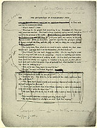 Click to enlarge. |
So Tom said, now for the nonnamous letters. "What's them?" I says. "Warnings to the people that something is up. It's done one way in the books, sometimes another. But there's always somebody spying around, that gives notice to the governor of the castle." "But looky here, Tom, what do we want to warn anybody for, that something's up. Let them find it out for themselves -- let 'em take care of the nigger themselves -- it's their lookout." "Yes, I know that; but you can't depend on them. It's the way they've acted from the very start -- left us to do everything. They're so confiding and mullet-headed they don't take notice of nothing at all. So if we don't give them notice, there won't be nobody nor nothing to interfere with us, and so after all our hard work and trouble this escape 'll go off perfectly flat: -- won't be no excitement -- won't amount to nothing -- won't be nothing to it." "Well, as for me, Tom Sawyer, when I'm sett'n a runaway nigger free, that's the way I'd like." "Shucks," he says, and looked disgusted. |
TWO MISSING PAGES |
So Tom he wrote
the nonnamous letter. It said:
Next night we stuck a picture, which Tom drawed in blood, of a skull and crossbones on the front door; and next night another one of a coffin on the back door. I never see a family in such a sweat. They couldn't a been worse scared if the place had a been full of ghosts laying for them behind everything and under the beds and shivering through the air. If a door banged, Aunt Sally she jumped and said "ouch!" if anything fell, she jumped and said "ouch!" if you happened to touch her, when she warn't noticing, she done the same; she couldn't face noway and be satisfied, because she allowed there was something behind her every time -- so she was always a-whirling around sudden, and saying "ouch," and before she'd got two-thirds around she'd whirl back again, and say it again; and she was afraid to go to bed, but she dasn't set up. So the thing was working very well, Tom said; he said he never see a thing work more satisfactory. He said it showed it was done right. So he said, now for the grand bulge! So the very next morning at the streak of dawn we got another letter ready, and was wondering what we better do with it, because we heard them say at supper they was going to have a nigger on watch at both doors all night. Tom he went down the lightning-rod to spy around; and the nigger at the back door was asleep, and he stuck it in the back of his neck and come back. This letter said: Don't betray me, I wish to be your friend. There is a desprate gang of cut-throats from over in the Indian Territory going to steal your runaway nigger to-night, and they have been trying to scare you so as you will stay in the house and not bother them. I am one of the gang, but have got religgion and wish to quit it and lead an honest life again, and will betray the helish design. They will sneak down from northards, along the fence, at midnight exact, with a false key, and go in the nigger's cabin to get him. I am to be off a piece and blow a tin horn if I see any danger; but stead of that I will BA like a sheep soon as they get in and not blow at all; then whilst they are getting his chains loose, you slip there and lock them in, and can kill them at your leasure. Don't do anything but just the way I am telling you; if you do they will suspicion something and raise whoopjamboreehoo. I do not wish any reward but to know I have done the right thing. UNKNOWN FRIEND. |
|
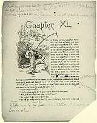 Click to enlarge. 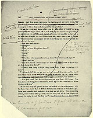 |
Next night you bet the family was in an awful sweat & worry; & they sent us up to bed at sun-down; & we got up, nearly midnight, & Tom told me to sneak down cellar & hook a lunch. And then mosey right down the lightning-rod and come along to the cabin, and said "I'll go and be ready to ba like a sheep and shove out with Jim soon as you get there." So down the rod he went, and down cellar went I. I got a hunk of butter & put it on a slab of corn-pone & coming up I come ker-slam against A[unt] S[ally]. She says: "You just march into that sitting-room and stay there till I come. You been up to something you no business to, and I lay I'll find out what it is before I'm done with you." So she went away as I opened the door and walked into the sitting-room. My, but there was a crowd in there! Fifteen farmers, and every one of them had a gun. I was most powerful sick, and slunk to a chair and set down. They was setting around, some of them talking a little, in a low voice, and all of them fidgety and uneasy, but trying to look like they warn't; |
|
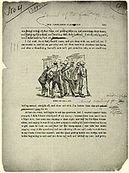 Click to enlarge. |
I did wish Aunt Sally would come, and get done with me, and lick me, if she wanted to, and let me get away and tell Tom how we'd overdone this thing, and what a thundering hornet's nest we'd got ourselves into, so we could stop fooling around, straight off, and clear out with Jim before these rips got tired waiting for midnight. At last she come, and begun to ask me questions, but I couldn't answer them straight, I didn't know which end of me was up; because these men was in such a fidget now, that some was wanting to start right now and lay for them desperadoes, and saying it warn't but a few minutes to midnight; and others was trying to get them to hold on and wait for the sheep-signal; and here was aunty pegging away at the questions, and me a shaking all over and ready to sink down in my tracks I was that scared; and the place was getting hotter and hotter, and the butter beginning to melt and run down my neck and behind my ears; and pretty |
|
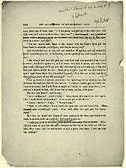 Click to enlarge. |
soon, when one of them says, "I'm for going and getting in the cabin first, and right now, and catching them when they come," I couldn't stand it no more & I lit out. I was up stairs in a second, and down the lightning-rod in another one, and shinning through the dark for the lean-to. I couldn't hardly get my words out, I was so anxious; but I told Tom as quick as I could, we must jump for it, now, and not a minute to lose -- the house full of men, yonder, with guns! His eyes just blazed; and he says: "No! -- is that so? Ain't it bully! Why, Huck, if it was to do over again, I bet I could fetch two hundred! If we could put it off till ------" "Hurry! hurry!" I says. "Where's Jim?" "Right at your elbow; if you reach out your arm you can touch him. Everything's ready. Now we'll slide out and give the sheep-signal." But then we heard the tramp of men, coming to the door, and we heard them begin to fumble with the padlock; and heard a man say: "Here, I'll lock some of you into the cabin and you lay for 'em in the dark and kill 'em when they come; and the rest scatter around a piece, and listen if you can hear 'em coming." |
|
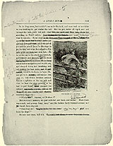 Click to enlarge. |
So in they come, but couldn't see us in the dark, and most trod on us while we was hustling to get under the bed. But we got under all right, and out through the hole under the wall, & into the lean-to swift but soft -- and heard tramp trampings scrape that door close by outside. So we crept & Tom he set his ear to the crack and listened, and listened, and listened for the steps to get further and at last he nudged us, and we slid out, and stooped down, not breathing [MT's stage direction in margin here: "very slow"] and slip slip slip towards the fence, in Injun file, and got to it, and me and Jim over it; but Tom's britches catched fast on a splinter on the top rail, and then he hear the steps coming again, so he had to pull loose, & that snapped the splinter; & somebody sings out: "Who's there? Answer, or I'll shoot!" But we didn't answer; we just unfurled our heels and shoved. There was a rush, and a bang, bang, bang! and the bullets fairly whizzed around us! We heard them sing out: "Here they are! after 'em boys! turn loose the dogs!" So here they come, full tilt. |
|
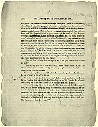 Click to enlarge. |
We was breakin for the mill; and when they closed up on us, we dodged into the bush and let them go by, and then here comes the dogs, making pow-wow enough for a million; but they was our dogs; and when they see it warn't nobody but us, and no excitement to offer, they tore right ahead towards the shouting and clattering; and then we up steam again and whizzed along behind them till we was nearly to the mill, and then struck up through the bush to where my canoe was tied, and hopped in and pulled for dear life for the middle of the river. Then struck out, easy and comfortable, for the island where my raft was hid; and we could hear them yelling and barking at each other all up and down the bank, till we was so far away the sounds got dim and died out. And when we stepped onto the raft, I says: "Now, old Jim, you're a free man again, and I bet you won't ever be a slave no more." "En a mighty good job it wuz, too, Huck. It 'uz planned beautiful, and it 'uz done beautiful; and dey ain't nobody kin git up a plan dat's mo mixed-up en splendid den what dat one wuz." We was all as glad as we could be, but Tom was the gladdest of all, & the proudest, because he had a bullet in the calf of his leg. |